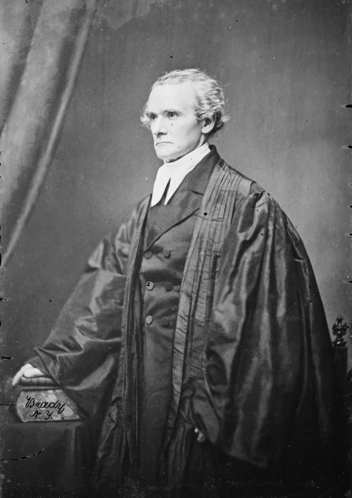
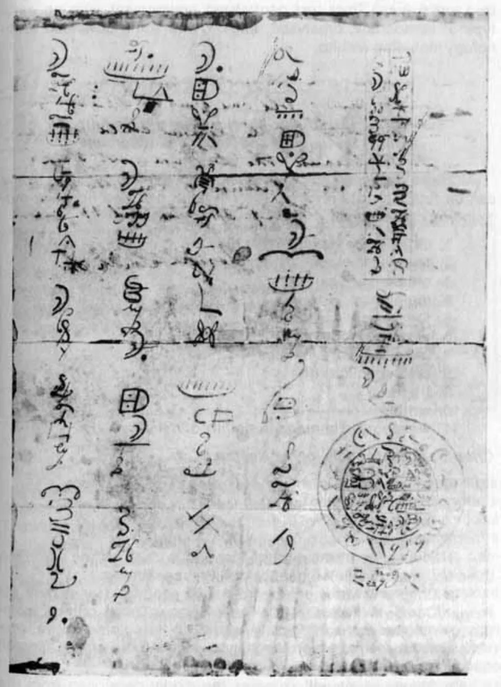
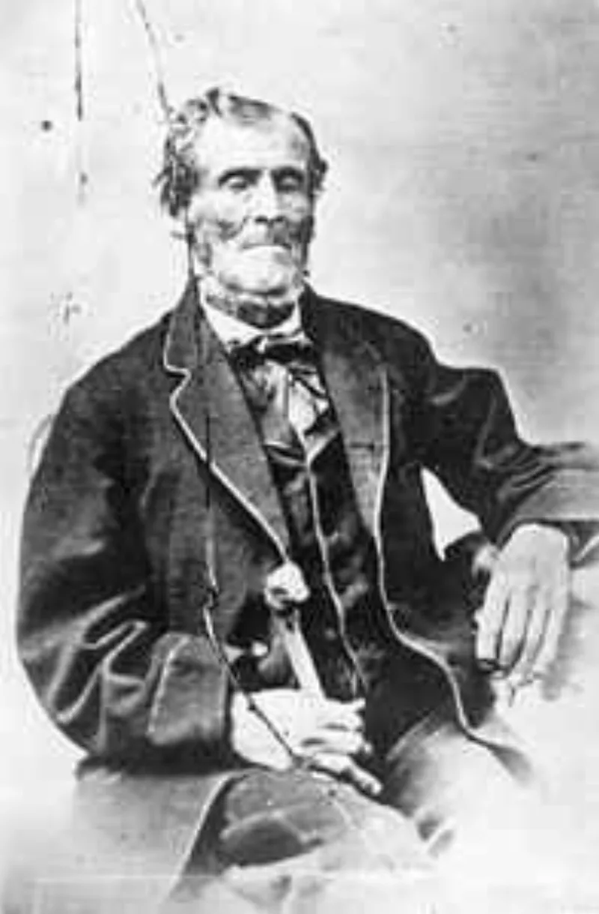

Their own church publications admit these facts. You can make this point from LDS sources alone.
Between 1980 and 1985 he supplied a stream of faked founding-era documents. The Anthon transcript in 1980.
The Joseph Smith III blessing in 1981, quietly traded to the RLDS church. And in 1984 the salamander letter, in which "Martin Harris" describes a white salamander, not an angel, guarding the plates.
Steve Christensen bought that one for $40,000 and gave it to the church.
Senior leaders, including Gordon B. Hinckley, met Hofmann repeatedly and acquired sensitive items.
Some were held in the First Presidency vault. Leaders publicly played down what the church held.
No apostle, seer or revelator detected the fraud.
Hofmann feared exposure. In October 1985 he murdered Steve Christensen and Kathy Sheets with pipe bombs.
The forensic examiner George Throckmorton then proved the documents were forgeries. The church's own history-topics essay now tells the story.
FAIR says discernment is not omniscience. God does not shield leaders from ordinary deception, and Scripture shows prophets being deceived in mundane things.
The country's best document examiners, dealers and historians were fooled too. The church bought documents as any archive does, published several of them — including the salamander letter — rather than hiding them, and cooperated with prosecutors.
Hofmann's success says something about forgery, and nothing about revelation.
They admit the sequence, and only its meaning is argued. The omniscience answer has force against a cheap gotcha.
But D&C 46:23-27 promises the discerning of spirits precisely so the church is not deceived. And notice what the buying shows.
Leaders found a salamander origin story plausible enough to acquire and hold.
"D&C 46 promises discernment so the church isn't deceived. How did Hofmann get so far?"



Seeing is not knowing everything. The best document men in the country were fooled.
FAIR replies that discernment is not the same as knowing everything. God does not shield leaders from ordinary human deceit, and Scripture shows prophets fooled in plain matters.
The best document men in the country were fooled too. So were dealers and historians.
The church bought papers as any archive buys papers about its own past. It printed several of them, the salamander letter among them, rather than burying them. And it worked with the prosecutors.
Leaders being willing to handle troubling papers is framed as openness. Hofmann's success says something about forgery. It says nothing about revelation.
They admit the sequence: D&C 46 promises discernment so the church is not deceived.
The sequence is conceded in the church's own essay. The meetings. The purchases. The vault. The failure to detect. And the murders of Steve Christensen and Kathy Sheets in October 1985.
Only the meaning is disputed. The reply that discernment is not omniscience has force against a cheap gotcha. But it prunes the claims of the office. D&C 46:23-27 promises the discerning of spirits precisely 'lest ye be deceived'.
And look at what leaders did. They negotiated for and secured documents that undercut their own founding story. They found a magic-salamander origin plausible enough to buy.
That they treated the salamander letter as possibly genuine Martin Harris material says something about the folk-magic world it came from.